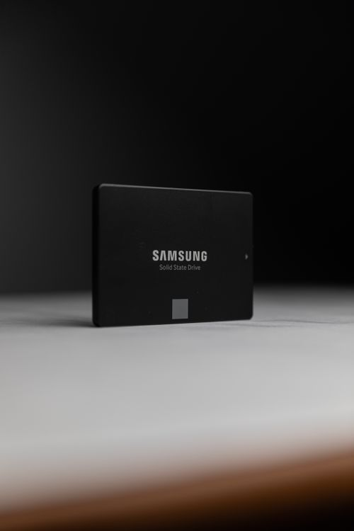

Android Issues
Is Overnight Charging Bad for Your Phone? The Honest Answer
The internet says overnight charging ruins batteries. Here is what actually happens inside a modern phone.

Your phone shows "storage full" and refuses to save photos, download apps or update software. This happens because videos, photos, WhatsApp files and app data slowly fill the storage over months. When storage is full, the phone also becomes slow and apps start crashing. Fixing it is free and takes only a few minutes.
Usually WhatsApp — its media folder grows for years silently. WhatsApp → Settings → Storage and data shows the exact culprits per chat.
Sort WhatsApp media by size inside the app (Storage settings) rather than deleting photos manually - the biggest space thieves are almost always video categories you forgot existed.
The internet says overnight charging ruins batteries. Here is what actually happens inside a modern phone.
“Fast charging kills your battery” — one of the most repeated claims online. Here’s what research actually shows.
Battery dying by lunch? Here are 10 fixes that actually work — plus the biggest myth that makes it WORSE.